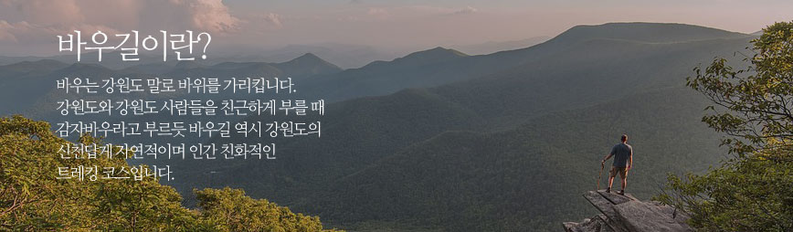
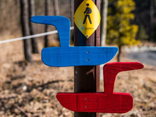
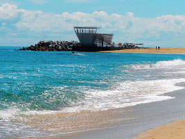
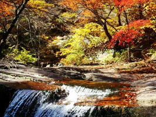
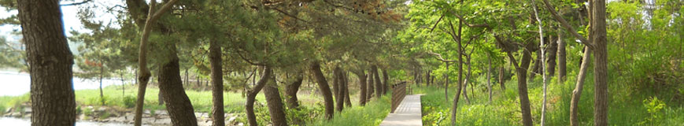
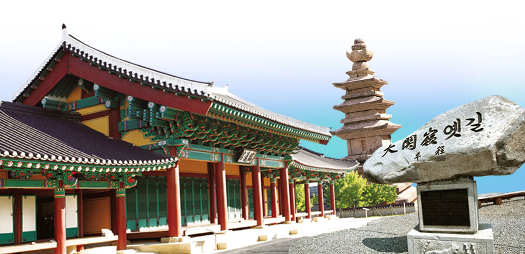
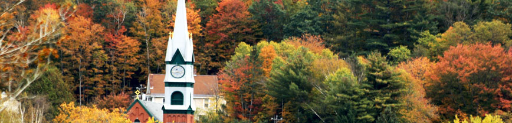

바우길이란

바우길의 특징
1. 다양한 코스
바우길을 백두대간에서 경포와 정동진까지 산맥과 바다를 함께 걷는 총 연장 약 400km로
강릉바우길 17개구간, 대관령바우길 2개 구간, 울트라 바우길, 계곡바우길, 아리바우길로 이루어져 있습니다.
산맥에서 바다로 나아가는 길이라고 해서 경사가 높지 않습니다.
어느 길도 주말이면 어린 아이들을 앞세우고 온 가족이 함께 걸을 수 있는 솔향기 물씬한 길입니다.



2 . 모든 코스가 금강소나무 숲길

바우길은 어느 길도 강원도의 자랑과도 같은 금강소나무 숲이 70%이상 펼쳐져 있습니다.
파도가 밀려드는 해변조차도 소나무 숲 길 사이로 길이 나있습니다. 소나무 숲 길은
그 곳에서 휴식하며 숨을 쉬는 것만으로도 우리의 지친 심신을 치유하는 기능을 가지고 있습니다.
그런 길을 걷는 것은 삶의 에너지를 충전하고, 그 자체로 우리 건강을 지킵니다.
우리나라의 이름 난 삼림욕장 모두 소나무 숲 속에 있고,
실제로 바우길이 있는 대관령에 우리나라 최고의 삼림욕장이 있습니다.
바우길을 걷는 것은 트레킹과 삼림욕을 동시에 하는 일입니다.
3 . 역사와 문화와 함께 걷는 길

대관령 길은 일찍이 신사임당이 어린 율곡을 앞세우고 어머니를 그리며 걸은 길입니다.
김홍도도 이 길을 걷는 중 대관령의 절경에 반해 대관령 그림을 남겼으며, 송강 정철도 이 길을 넘어 관동별곡을 남겼습니다.
그 외에도 참으로 많은 시인묵객이 이 길을 걸으며 시와 그림을 남겼습니다.
신라향가 중 헌화가의 무대인 정동진의 붉은 해안단구길 등 한 코스 한 코스마다 옛 선인들의 전설 같은 이야기가 함께 합니다.
4 . 새롭게 찾아낸 심스테파노의 길

우리나라 전국 어디를 가나 조선시대 말의 천주교 성지가 있습니다.
그러나 강원도 원주와 횡성 동쪽에 성지와 성지길이 없었던 것은 태백산맥 동쪽으로 천주교의 전파가 그 만큼 더뎠다는 뜻입니다.
조선 말 병인교난(1866-1878년)때 심스테파노라는 천주학자가 강릉 골아우에서 신앙생활을 하다가
지방관아의 포졸들이 아니라 당시로서는 아주 드물게 서울에서 직접 내려온 포도청 포졸들에게 잡혀가 목숨을 잃은 기록과 마을을 찾아냈습니다.
심스테파노의 본명과 어디에서 온 누구인지는 확실하지 않아도 그 누구도 부인할 수 없는 사실은
그 곳에서 믿음 깊은 한 신자가 자신의 기둥 같은 믿음 아래 순교했다는 사실입니다.
우리는 명주군 왕릉에서 그 곳까지 이르는 길을 심스테파노의 길로 이름 지었습니다.